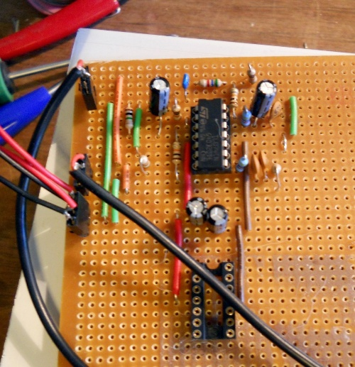

Goal - to create a custom effects pedal (stomp box) for the Vinocaster that will help bring out the sounds I like.
Status 2012-10-24: soldered up and cased pre-amp/tone booster
Status 2011-04-07: got as far as a breadboarded pre-amp/tone booster
I wrote some of this as I went along, some of it after I'd finished, so the tense hops around a bit
Motivation
I've got lots of stomp boxes. Most of them are cheap brands such as Behringer, which are commonly praised for their sounds (many are circuit clones of name brand boxes) but criticised for their physical build - comparatively lightweight plastic, not good for regular stomping. That doesn't matter for the main use that I put them to, as outboard effects for recording. But naturally I'm interested in playing the guitar directly through them.
I tend to fall back on a default setup for practising (and recording, at least initially) which is:
Vinocaster ->
-> Graphic Eq. (DanElectro Fish & Chips)
-> Distortion (Behringer Vintage Tube Monster VT999)
-> Tremolo (DanElectro Tuna Melt)
-> Spring Reverb (Behringer Reverb Machine RV600)
-> Amp. (Marshall MG30DFX)
I've got variations on all these (e.g. a real spring reverb, but it's only a short spring), but these are the ones I prefer. Normally the amount of effect added by each will be fairly minimal, producing a relatively clean (maybe rockabilly) twang.
So the other day I was playing with the modified Squire Strat and noticed that direct into the amp it was noticeably brighter than the Vinocaster. I thought I'd look into it. That led me to design a pre-amp section, to cover the usual settings I have on the graphic eq.
Pre-Amp/Tone Booster
Here are the output freqs of Vinocaster compared with a modified Squier Strat, gently strumming an open E chord. Bridge pickups only (TV Jones Magna'Tron in Vinocaster, Seymour Duncan Duckbucker in strat).
Measured using Blue Cat Freq Analysis plugin with energyXT as VST host, peak values.
Looks like there's an extra 10dB or so on the strat above 3kHz. The low end measurements aren't particularly reliable (they visibly wobble a lot while running).
Then I looked at how I had the graphic eq. set up :
That looks very similar to an extra 10dB or so above 3kHz, plus slight boost below maybe 300Hz, flat around 1kHz.
Which gave me a good target for a pre-amp.
I spent a while online looking at various tone circuits, especially those designed for guitars. There are a lot of single transistor treble-boosters out there, as well as interesting subcircuits for guitar amps (keywords: "tone stack circuit"). The Big Muff tone subcircuit is remarkable (and insane). More technical pages (keywords: "filter circuit") tended to cover more drastic filtering than what I'm after.
The slope with of the least complicated circuit, a simple RC, is 6dB/octave, and I reckoned two of those should be about enough here, one for treble and one for bass. To reduce interactions between subcircuits and otherwise keep things simple, I decided to use op-amps. So initially I sketched out each of these individually and simulated them with SPICE. Once I'd got curves that looked roughly ok I combined them. Then I applied a hefty amount of trial and error, trying little tweaks here and there. The hard bit was getting something near 0dB around 1kHz. I fudged it a little by inserting another little RC in low pass section.
Anyhow, here's the circuit I came up with:
The input goes through a DC-blocking capacitor and then a unity-gain buffer X0 which feeds the two filters. The main low-pass section is around X1, with the R10/C4 combination pulling down at the low end a little more. The high-pass section is around C3. Finally X3 mixes the two outputs. Later on I'll increase R7 to give a bit of gain, probably hook the output to a pot for control.
Here's the result of SPICE simulation:

Here's the SPICE source and an include file (for the TL074 model) - note there's no input buffer, and the numbering's a bit odd because of all the tweaking... I ran it using the command ngspice preamp.cir
Happy with this, I broke out the breadboard (first time I've used one in > 10 years!) :

I've not got any proper test gear but a computer with a fairly good soundcard makes a reasonable substitute...
Here's the circuit's actual response:
Blue line - input - is pink noise (generated with Audacity), red line is output of the pre-amp. The curve has the two humps with a flattish bit in between, which seems consistent with the simulation. Hmm, just noticed the blue triangle on the right - wonder if that adjusts the scale...
Here's the guitar through it:

This seems exaggerated - I ran this by recording separate tracks (the straight Vinocaster in fact recorded a couple of days ago), next time I have a play I'll retest using an identical source (d'oh!). Must also see how the graphic eq. looks like under the same test.
Whatever, the sound is noticeably clearer at both high and low end, sounds better to me. I'll play with it for a few days, and have a think about adding a distortion stage - not got a case so no point in committing anything to stripboard just yet.
Incidentally it occurred to me that with the two filters what I've got is a splitter. So I had a play with sending just the low end (or high end) through other effects before recombining. I was a bit disappointed with the result of putting either through distortion, depending on the mix it either didn't sound much different from regular distortion or it was just a bit of (slightly irritating) fizz. However, things got a lot more interesting with delay effects. In particular putting just the high end through chorus sounded (IMHO) much better than usual chorus, it was possible to make it extreme but without making it sound out-of-tune or muddy as otherwise. So I when I get around to putting the thing in a case, whatever else I'll definitely add separate jacks from the outputs of the filters.
...
Ok, retested with a sensible guitar signal, blue is input (from Vinocaster), red is output (of preamp) :
Looks a lot more like expected, and although the treble boost comes in a little lower than I was aiming for, it's near enough, and (more importantly) the sound is a big improvement. Design validated.
(I got the curves by simultaneously recording half a minute or so of random strumming both direct from guitar and through pre-amp onto two channels, replaying them through the Blue Cat plugin, peak hold).
[Months Later]...I've soldered up the pre/tone circuit and slapped it in a case. Made a silly mistake by making ground 0v rather than -9v (to be compatible with other stomp boxes+shared power supply). But that parts now basically work a treat. I ran analysis on it again, this time using white noise as the source (dunno why I didn't do that before). Results:

More to the point : it sounds great!

{kind=link}
{kind=link}
{kind=link}
{kind=link}
{kind=link}